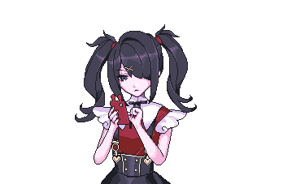

AME /// СКРЕПЫШ
локальный режим
настроение: спокойное

нажми на Скрепыша, чтобы погладить ♡
Сообщенияответы без нейросети
Это ранний прототип: реплики выбираются по простым словам и правилам. Всё работает в браузере, без API и платных сервисов.